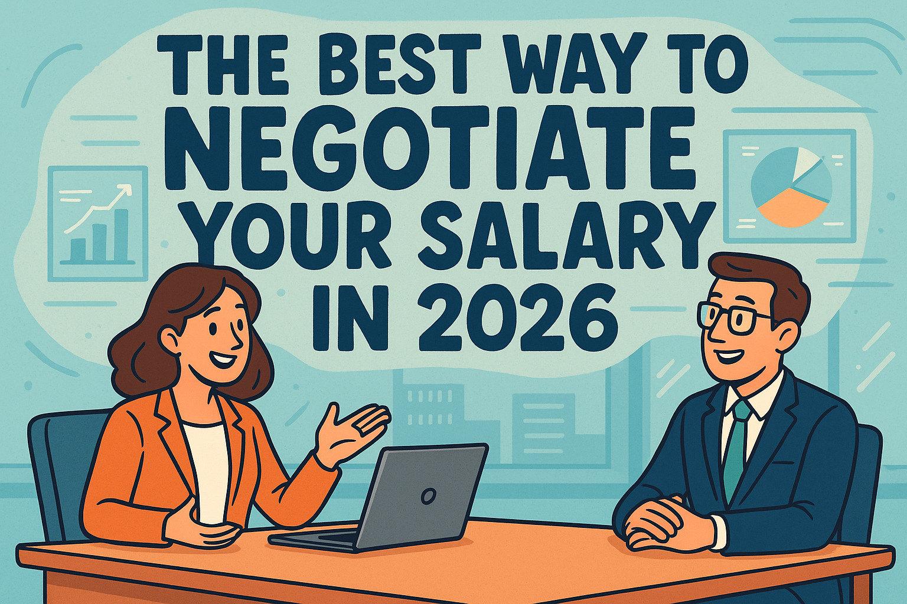

Working at Amazon in 2026: Salaries, Culture, and the Interview Process Explained
A full breakdown of Amazon's leadership principles interview, compensation structure, and what it's actually like to work there.

Let me be direct with you: most interview advice you'll find online is either obvious, outdated, or written by someone who has never sat on the hiring side of a desk. This post is different. After 15 years placing candidates at companies ranging from fast-growth startups to Fortune 500s, I've watched thousands of job interviews — and I've seen brilliant people fail for entirely avoidable reasons. If you're researching job interview tips for 2026, what you actually need isn't a list of "smile and make eye contact" platitudes. You need to understand what hiring managers are really evaluating, why interview formats have shifted dramatically since 2023, and how to communicate your value in a way that cuts through the noise of an increasingly AI-screened hiring process.
This guide covers preparation strategy, the frameworks that work, how to navigate asynchronous video interviews, salary negotiation scripts, and the specific mistakes that knock out otherwise strong candidates. What it won't do is promise you a silver bullet — no guide can replace genuine preparation. If you're also researching what working life looks like inside specific companies, I'd suggest reading our deep-dive on working at Amazon in 2026 or our Netflix career guide for a different high-performance culture.

The job market in 2026 looks structurally different from anything candidates faced even three years ago. AI-assisted screening tools are now used by over 70% of companies with more than 500 employees, according to a 2025 SHRM survey. That means your resume has likely been scored, ranked, and filtered before a human recruiter ever opens it. The good news: if you're reading this, you've already cleared that hurdle and secured an interview. The challenge is that the live interview itself has become harder, not easier, as a result of this filtering. Hiring managers are seeing fewer but higher-calibre candidates, which means the bar for what constitutes a strong performance has moved upward.
Beyond AI screening, the format of interviews has also shifted. Asynchronous video interviews — where candidates record answers to pre-set questions without a live interviewer present — are now standard at the first round for roughly 40% of enterprise employers. Behavioural frameworks like STAR (Situation, Task, Action, Result) and its more recent variant, STARR (which adds Reflection), are nearly universal in structured interviews. Companies that once relied on loose conversational interviews have largely moved to competency-based formats, partly due to legal pressure around consistency and partly because structured interviews simply predict job performance more accurately.
The other significant shift is the rise of panel interviews at earlier stages. Where a first-round conversation once involved a single hiring manager, many companies now bring two or three interviewers into the room from the outset — each evaluating a different dimension of your candidacy simultaneously. This changes the dynamic considerably: you're no longer managing one person's attention but reading a room. Understanding these changes is not optional if you want to compete effectively for the roles listed on the Talent Loop jobs board in 2026.
Key insight: In 2026, most candidates are eliminated before they ever speak to a human. If you've reached the interview stage, you've already beaten the odds. The question now is whether your live performance matches the promise your application made.
How AI Is Changing the Hiring Process in 2025–2026
What AI screening tools actually evaluate — and how to ensure your application clears the first filter before any human sees it.


Asynchronous video interviews — platforms like HireVue, Spark Hire, and VidCruiter — are now a standard first-round filter at roughly 40% of enterprise employers. The format is simple: you're sent a set of questions and given a fixed time window to record your answers, usually one to three minutes per question. There is no interviewer on the other end. You're speaking to a camera, and your response is reviewed later — sometimes by a human, sometimes by an AI scoring model, often by both.
Most candidates underperform in this format not because they lack the substance but because they haven't adapted their communication style to the medium. In a live interview, an interviewer's reactions tell you whether you're on track. A nod, a follow-up question, a raised eyebrow — all of these give you real-time feedback to adjust. In an async format, you get none of that. You have to be your own director.
Test everything 24 hours in advance. Camera, microphone, internet speed, and the platform itself. Record a 60-second test response and watch it back. Check your framing — your face should fill roughly a third of the frame with a small amount of headroom above.
Control your background. A clean, neutral wall or a tidy bookshelf reads as professional. Avoid virtual backgrounds — they look artificial and can glitch. Ensure the background doesn't compete with you visually.
Light from the front, not from behind. A lamp or window positioned in front of you creates even, flattering light. A window behind you turns you into a silhouette.
Speak to the camera lens, not the screen. The single most common mistake. Looking at your own video feed makes you appear to look slightly downward — which reads as evasiveness or low confidence. Place a small sticky note just above or beside the camera lens as a focal point.
Use the practice question to calibrate, never to skip. Almost every async platform offers an optional practice question before the real ones begin. Use it. Watch the playback. Adjust your volume, pace, and framing. Most candidates skip it — which means they're calibrating on a question that actually counts.
Structure every answer before you start recording. You typically have 30–60 seconds to think before recording begins. Use all of it. Jot a three-point structure on a notepad just off-camera. Unstructured answers are especially damaging because there's no conversational back-and-forth to rescue you if you lose the thread.
How to Ace a HireVue / Async Video Interview
Practical setup tips, answer structure, and the most common mistakes candidates make when speaking to a camera instead of a person.


Preparation is not the same as rehearsal. Most candidates rehearse — they practise answers until they feel smooth. Preparation means understanding the role, the company, the interviewer's objectives, and your own narrative well enough to respond accurately under pressure. Here is the framework I recommend to every candidate I work with.
A job description is not a wishlist — it's a map of what the hiring manager is trying to solve. Read it at least three times, each with a different lens. First, identify the top three outcomes the role is hired to deliver (not the tasks, but the results). Second, identify the implied problems the team is facing — words like "drive alignment," "establish process," or "scale the function" signal specific organisational pain points. Third, map your own experience directly to each of these. Every answer you give in the interview should connect, explicitly or implicitly, to the outcomes on that map.
Pay particular attention to the order in which requirements are listed. Most hiring managers draft job descriptions by priority, even if they don't realise it. The first three bullets under "Requirements" typically reflect the skills they'll weight most heavily in evaluation. If "cross-functional stakeholder management" appears first, that's your signal — not "5+ years of experience in X," which often appears later and carries less implicit weight.
Telling an interviewer you've read the company's website is table stakes, not preparation. What actually demonstrates genuine interest is evidence of depth: referencing a recent earnings call comment from the CEO, citing a product launch or strategic shift from the last six months, or acknowledging a competitive challenge the company is navigating publicly. LinkedIn, Glassdoor, and industry press are your tools here. For publicly traded companies, reading the most recent 10-K or investor letter will give you context that almost no other candidate will have.
If the company has a podcast, YouTube channel, or regular blog, use it. Executives who speak publicly on record are telling you exactly how they think about their business and their priorities. Quoting something a senior leader said — accurately and in context — in a final-round interview is a high-signal move that very few candidates make. It costs 45 minutes of listening and returns an outsized impression.
STARR — Situation, Task, Action, Result, Reflection — is the structure that competency-based interviews are built around. You need a minimum of eight to ten pre-prepared stories covering different competency areas: leadership, problem-solving, conflict, failure, collaboration, stakeholder management, and initiative. Each story should be crisp enough to deliver in under three minutes but rich enough to expand when probed. The Reflection component is where many candidates lose marks — interviewers increasingly want to know not just what you did, but what you learned and how it changed your approach.
Pro tip: The best STARR stories are ones where you can honestly say "I" rather than "we" throughout. Amazon, in particular, trains its interviewers to listen specifically for individual contribution. Even in genuinely collaborative work, be precise about your specific role in the outcome.
STAR Method Interview Answers That Actually Work
A practical walkthrough of how to structure compelling behavioural interview answers using the STAR and STARR frameworks, with real examples across multiple competency areas.

The questions you ask at the end of an interview reveal more about your thinking than many candidates realise. Weak questions ("What's the culture like?") signal low preparation. Strong questions demonstrate commercial awareness and genuine curiosity about the role's success metrics. Ask about the primary challenge the person in this role will face in their first 90 days. Ask what success looks like at the 6-month and 12-month marks and how it is measured. Ask what the team's biggest strength is and where there's still work to do.
One question I recommend almost universally: "What would make you hesitate to hire someone for this role?" It's direct, slightly unexpected, and accomplishes two things simultaneously — it gives you intelligence about hidden concerns on the panel's mind, and it positions you as a candidate confident enough to ask it. Most interviewers answer honestly, and the answer tells you exactly where to double-down in your closing remarks.
Logistics matter more than people admit. If you're interviewing in-person, visit the location beforehand if possible. Know the exact room, the parking, the building entrance. For video interviews, test your audio, lighting, and internet connection 24 hours in advance. Treat your background as part of your personal brand. On mindset: the candidates who perform best are those who have prepared so thoroughly that genuine confidence is a natural by-product, not a performance.

"Tell me about yourself" is the most misunderstood question in any interview, and getting it wrong sets a poor tone for everything that follows. Most candidates treat it as an invitation to summarise their CV chronologically. The interviewer already has your CV. They are not asking for a recap — they are asking you to demonstrate self-awareness and prove you understand what this role actually requires.
The most effective structure I've seen, used consistently by candidates who receive offers, is what I call the Present–Past–Future model. Start with your current role and a specific, relevant achievement that signals capability in the area most important to this new position. Move briefly to the experience and skills that got you there — two or three sentences maximum. Then pivot forward: explain why this specific role at this specific company represents the logical and motivated next step. The whole answer should take 90 seconds to two minutes.
What most guides miss is that this question is also an early test of communication skill. Hiring managers note immediately whether a candidate speaks in clear, purposeful sentences or rambles through loosely connected thoughts. Practising your answer aloud — not just in your head — is essential. Record yourself on your phone. Most people are surprised by how different their answer sounds when they actually hear it back.
Present: "In my current role as Marketing Manager at [Company], I led the repositioning of our flagship product — which drove a 34% increase in qualified pipeline over 18 months."
Past: "That built on seven years in B2B SaaS marketing, focused specifically on the intersection of product narrative and demand generation."
Future: "I'm here because [Company]'s move into the enterprise segment is exactly the challenge I want to work on next — and from what I've seen of your product roadmap, I think there's a significant positioning opportunity that aligns directly with what I've been building toward."
How to Answer "Tell Me About Yourself" — The Best Structure
A hiring manager breaks down exactly what they want to hear in the opening minutes — and the mistakes that signal low preparation immediately.

Performing well in an interview is not just about getting the offer — it measurably affects the salary you're offered. Candidates who communicate their value clearly, handle salary questions with confidence, and demonstrate genuine preparation are consistently offered higher starting salaries. The data below reflects 2026 estimates across eight common roles.
| Role | Avg Salary Without Negotiation (US) | Avg Salary With Strong Performance | % Increase |
|---|---|---|---|
| Software Engineer (Mid-level) | $112,000 | $128,000 | +14% |
| Marketing Manager | $87,000 | $99,500 | +14% |
| Sales Executive | $78,000 base | $91,000 base | +17% |
| Product Manager | $118,000 | $138,000 | +17% |
| Data Analyst | $82,000 | $94,000 | +15% |
| UX Designer | $91,000 | $104,000 | +14% |
| HR Manager | $76,000 | $86,500 | +14% |
| Operations Manager | $80,000 | $93,000 | +16% |

Most candidates either skip negotiation entirely (accepting the first number offered) or handle it so awkwardly that it damages the relationship they've just built. The reality is that hiring managers almost universally expect negotiation — an offer made is rarely the ceiling, and failing to negotiate signals either that you don't know the market or that you're not confident in your value. Neither is the impression you want to leave.
In 2026, with salary transparency laws now active in 22 US states and companies in Canada, the UK, and the EU increasingly required to post ranges, the information asymmetry that once made negotiation feel risky has largely collapsed. Tools like Levels.fyi for tech roles, LinkedIn Salary, Glassdoor, and the Bureau of Labor Statistics give you a credible foundation for a specific number. Use them before you walk in.
The ideal moment to discuss compensation is after you've received a written or verbal offer — not during earlier interview rounds unless the recruiter specifically asks. If a recruiter asks for your salary expectations in a screening call, you can deflect professionally: "I'd like to learn more about the full scope of the role before anchoring on a number — could we revisit that once we both have a better sense of fit?" This is honest, professional, and buys you the information you need to anchor accurately.
Research in behavioural economics consistently shows that the first number stated in a negotiation anchors the entire conversation. This means whoever states a number first exerts disproportionate influence on the final outcome. When asked for your number, state the top of your justified range — not the middle, and not a wide range so broad it carries no information. A target stated with calm confidence ("I'm targeting a base in the range of $125,000 to $135,000, based on my research and the scope of this role") reads as prepared and credible. A wide, hedged range ("somewhere between $100k and $140k, I suppose") reads as uncertain.
Offer received: "We'd like to offer you $105,000."
Your response: "Thank you — I'm genuinely excited about this role and I appreciate the offer. Based on my research and the breadth of what this position involves, I was expecting something closer to $118,000. Is there flexibility there?"
Then: stop talking. Silence is not awkward — it's the other side thinking. The candidate who speaks first after stating their counter almost always concedes ground they didn't need to.
"No" to a base salary number doesn't mean the negotiation is over. Total compensation includes signing bonuses, equity or RSUs, additional leave, remote work flexibility, an earlier performance review, and a professional development budget — any of which can be negotiated independently of base salary. If the company is firm on base, ask: "Is there flexibility on the signing bonus or the equity component?" This framing acknowledges their constraint while keeping the conversation alive.
The one thing to never do: accept verbally on the call and then try to reopen the conversation later. Once you say yes, the negotiation is closed. If you need time to consider, say so: "I'd like 24 hours to review everything carefully before I formally accept — is that okay?" No reasonable employer will rescind an offer because a candidate took a day to think.
Salary Negotiation Scripts That Get Results
A step-by-step guide to negotiating your job offer salary with confidence — the exact language to use, when to push, and when to accept.


These are not the obvious errors — everyone knows not to arrive late or bad-mouth a former employer. These are the subtler mistakes that eliminate candidates who are genuinely qualified for the role they're interviewing for.
Being visibly excited about a role is not the same as being prepared for the interview. I've seen candidates who are clearly passionate about the company stumble badly because they treated their enthusiasm as a substitute for doing the work. Hiring managers can tell the difference instantly. Genuine preparation shows up in specificity — the ability to reference a real initiative, name a real challenge, or cite a real metric. Enthusiasm that lacks this grounding reads as superficial, regardless of how sincerely it's felt.
This happens most often with behavioural questions. The interviewer asks about a time you managed a conflict, and the candidate launches into a story about a technical challenge instead — because it's the story they're most comfortable telling. Pivoting away from the actual question is one of the clearest signals of low self-awareness a hiring manager can observe. If you don't have a perfect example for every question, acknowledge it briefly and give the closest relevant story you do have. Honesty combined with a genuine attempt to answer is far stronger than a polished non-answer.
Candidates who avoid the salary conversation or deflect with vague answers ("I'm open") consistently leave money on the table — and occasionally lose offers entirely because the company assumes they're either inflexible or not serious. In 2026, with salary transparency laws now active in 22 US states, there is rarely any tactical advantage in being evasive. Know your number before you walk in. Stating a specific, research-backed number with calm confidence is almost always better than hedging.
Sending a follow-up note within 24 hours of an interview is not a formality — it's a second impression. Most candidates skip it entirely, which makes doing it a low-effort differentiator. A strong follow-up is not a generic thank-you email. It references something specific from the conversation, adds a thought you didn't get to share during the interview, and reaffirms your interest in clear, professional terms. Two or three well-crafted sentences accomplish more than a paragraph of filler. Address it to every person in the room individually — not as a group reply.
Candidates frequently arrive at final-round interviews less prepared than they were at earlier stages, assuming the hard work is done. In reality, final rounds often involve senior stakeholders who have seen very little of the candidate to date and are making fresh judgements. The bar is higher, not lower, because the decision is closer. Treat every round as if it's the only one. Revisit your preparation, refresh your company research, and prepare new, deeper questions appropriate for the seniority of whoever you'll be meeting.
This guide is most useful for mid-career professionals actively preparing for competitive roles, recent graduates entering structured hiring processes for the first time, and career changers who need to reframe their experience for a new audience. If you want a more personalised view of where your interview readiness actually stands, the Talent Loop free career assessment benchmarks your profile against current market expectations and identifies the specific gaps worth addressing before your next interview.
Knowing what to do is different from having the tools to do it efficiently. Here are the resources I consistently recommend to candidates preparing for competitive roles in 2026.
First, use an interview simulation platform to practise under realistic conditions. The affiliate tool linked throughout this post offers structured mock interviews with AI-generated feedback on clarity, pacing, and content quality — it is genuinely useful for candidates who don't have access to a coach or peer group to practise with.
Second, use Glassdoor's Interview Questions section, filtered by company and role, to understand what specific questions have been asked recently. This is free, takes 20 minutes, and will tell you more about what to expect than most paid resources.
Third, build a structured answer bank using Google Docs or Notion. Keep 10–12 STARR stories in a single document, tagged by competency. Review it 48 hours before each interview. The act of writing your stories down — rather than just thinking about them — significantly improves recall under pressure.
Fourth, for async video interviews specifically, record yourself on your phone answering three practice questions before the real thing. Watch each playback with the sound off first — you'll notice posture, eye contact, and facial expression that you'd otherwise be blind to. Then watch with sound. This two-pass review catches more than any amount of mental rehearsal.
Finally, take the Talent Loop career assessment before your next application cycle. It gives you a clear, data-backed view of the roles and industries where your profile is most competitive. You can also explore the full Talent Loop blog for deep-dives into specific employers, industries, and career strategies.
The most important job interview tips for 2026 reflect the current hiring environment: AI-screened applications, async video interviews at first round, structured competency-based formats, and salary transparency expectations. The five things that matter most are (1) deconstructing the job description to identify the outcomes the role is hired to deliver, (2) building a bank of STARR-structured behavioural answers before the interview, (3) researching the company beyond surface-level information so your questions and answers reflect genuine commercial understanding, (4) preparing for async video interviews with proper setup and structure, and (5) having a specific, research-backed salary figure ready so you can handle compensation questions with confidence. Preparation that is deep and specific consistently outperforms preparation that is broad and superficial.
To ace an asynchronous video interview: test your camera, microphone, and internet connection at least 24 hours in advance. Position your camera at eye level, light from the front, and look at the camera lens rather than your screen. Always use the platform's optional practice question and watch the playback before recording real answers. Structure each response before your recording window opens, and speak to a specific point rather than rambling. The single most common mistake is an unstructured, wandering first answer — start every response with a direct, confident opening sentence. Keep answers within the time limit; most platforms flag responses that run over as a negative signal.
The best structure is the Present–Past–Future model. Start with your current role and one specific, relevant achievement. Then briefly describe the experience and skills that led you there — two or three sentences maximum. Finally, pivot forward and explain why this specific role at this company is the natural and motivated next step. The total answer should take 90 seconds to two minutes. Avoid treating it as a CV summary — the interviewer already has your CV. The Present–Past–Future model positions you as self-aware, forward-thinking, and genuinely interested in the specific role rather than any opportunity.
Wait until you have a written or verbal offer before negotiating. Research the market rate using LinkedIn Salary, Glassdoor, and Levels.fyi before the interview so you know your number in advance. When you respond to an offer, acknowledge it positively, then state a specific counter-number anchored at the top of your justified range — not a wide, vague range. Then stop talking. If base salary is fixed, negotiate signing bonuses, equity, remote work, review timelines, or professional development budget. Never accept verbally and then try to reopen. Ask for 24 hours in writing if you need time to think.
The most common mistakes that eliminate genuinely qualified candidates include: confusing enthusiasm for preparation; answering the question you wanted to answer rather than the one actually asked; being evasive about salary when transparency is both expected and legally required in many jurisdictions; skipping the follow-up note after the interview; and arriving at final rounds under-prepared. In async video interviews specifically: failing to use the practice question, poor lighting or eye contact with the screen rather than the camera lens, and unstructured answers that fill the time budget without landing a clear point.
At top employers in 2026, expect three to five rounds for most professional roles. The typical sequence begins with an async video or recruiter screen, followed by a hiring manager interview, one or two competency-based panel interviews, and a final round with senior leadership. Some roles include a case study, technical assessment, or presentation element. According to LinkedIn's 2025 Hiring Insights, the average time-to-hire at companies with more than 1,000 employees is now 32 days. Understanding this structure in advance helps you pace preparation, manage energy across rounds, and set realistic expectations about timelines.

After 15 years watching interviews, the single biggest predictor of success is not charisma, credentials, or even experience. It is whether the candidate has done the work to understand what the role actually requires and prepared honestly to demonstrate it. The frameworks in this guide — STARR answers, Present–Past–Future introductions, async video discipline, salary negotiation scripts, intelligent questions — are tools. They only work if the preparation behind them is genuine.
Interviews are not performances. They are structured conversations between two parties trying to assess mutual fit. The candidates who succeed are the ones who make that assessment easy by being specific, clear, and honest. In a hiring environment increasingly filtered by AI before a human ever sees you, your live interview is the moment the process becomes human again. Treat it accordingly.
If you want to know where your profile stands before your next interview cycle, take the Talent Loop free assessment. And if you're actively searching, the Talent Loop jobs board lists curated roles from employers with transparent hiring processes.